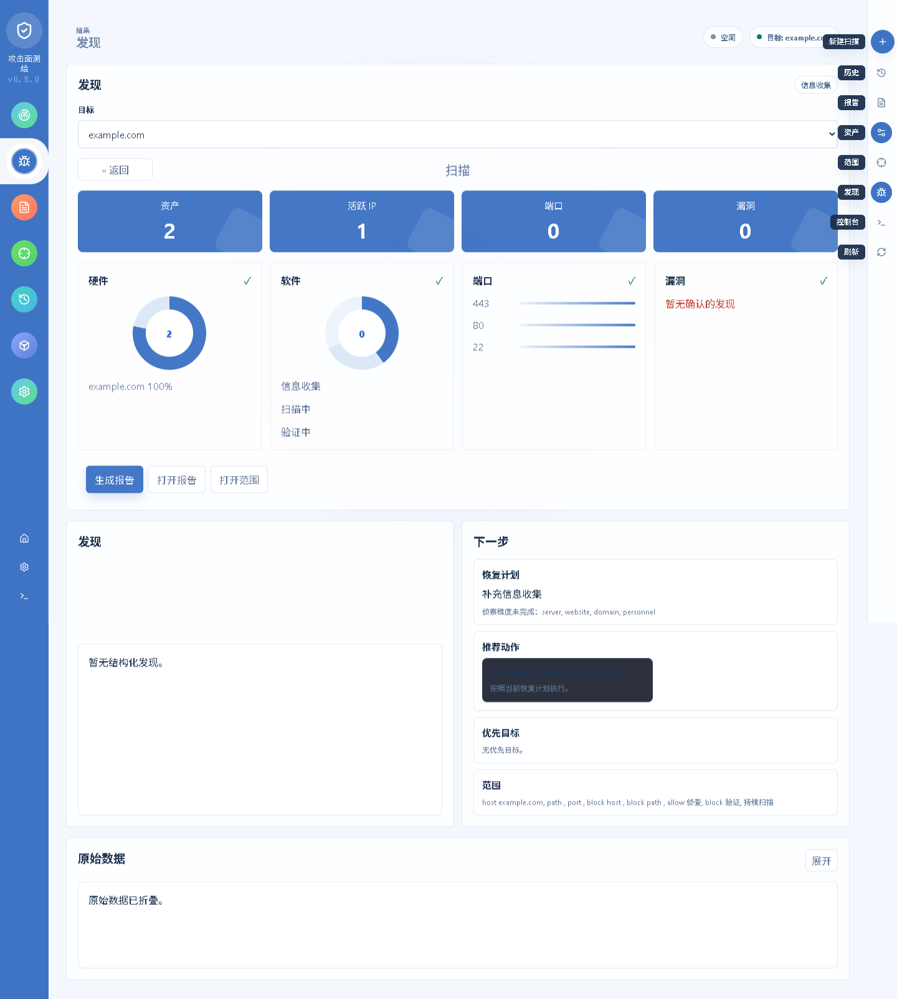

Natural-language loops
State a target once. The agent advances round by round and every event and artifact stays inspectable.
AI Pentesting Agent
One instruction in plain language and VulnClaw walks through recon, vulnerability discovery, exploitation and report generation. LLM agent + MCP toolchain + optional skill references, compatible with OpenAI, Anthropic, MiniMax and DeepSeek endpoints.
pip install vulnclaw
vulnclaw web # local console at http://127.0.0.1:7788No cloud dashboard and no third-party staging of target data: you bring the model endpoint, artifacts stay on disk.
State a target once. The agent advances round by round and every event and artifact stays inspectable.
Runs on one machine, keeps task state and reports locally, and pulls outside tools in over MCP with a plugin permission whitelist.
Markdown, HTML, PDF, SARIF and JSON with pentest, executive and CTF templates, deliverable to webhooks, Jira or DefectDojo.

Hand repetitive recon and known-vulnerability verification to the agent; keep judgement and exploit chains for humans.
A reproducible, round-by-round execution trace makes it a practical base for labs and drills.
Scheduled runs plus integration delivery turn periodic checks into a ticketable workflow.